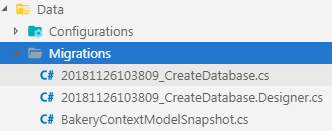
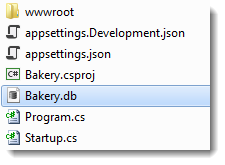
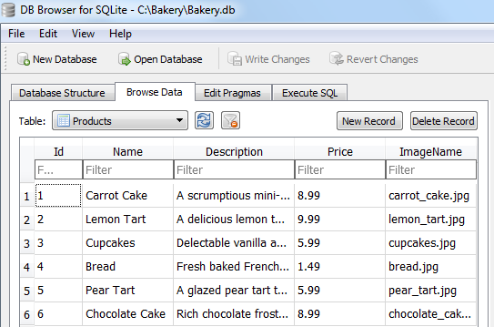

在开发应用程序时，随着新要求的出现，模型可能会经常更改。 数据库需要与模型保持同步。 使用 Entity Framework Core 迁移功能，您可以对模型进行更改，然后将这些更改传播到数据库架构。 如果数据库不存在，也可以使用迁移功能来创建数据库。
配置模型
EF Core 迁移基于一组约定。 这些约定控制着如何将 DbSet 对象映射到数据库中的表，
如何将属性映射到列，如何将 .NET 数据类型映射到数据库提供程序公开的合适类型以及如何创建和管理键和索引。 有时，这些约定无法满足您的需求，或者 EF Core 无法确定您的意图。
在这些情况下，您可以使用配置告诉 EF Core 您想要什么。
可以通过两种方式应用配置：通过使用注释属性来修饰类和属性， 或使用 Fluent API。属性仅提供配置选项的子集。 因此，对于任何相当复杂的模型，您可能都需要依靠流畅的API进行配置。同时，在所有配置中都使用流畅的 API 是有意义的，从而使配置代码保持一致，因此更容易在一个地方进行推理。
那么，您应该将 Fluent API 配置代码放在哪里？
您有两种选择：可以将其直接放置在 DbContext 类的 OnModelCreating 方法中；
或者您可以将配置代码放在每个实体的不同类上。 此示例将演示后一种方法，因为这是管理此方法的推荐方法。
将新文件夹添加到 Data 文件夹，并将其命名为 Configurations。 然后将一个名为 ProductConfiguration.cs 的新 C＃ 类文件添加到 Configurations 文件夹中。 用以下内容替换内容：
using Bakery.Models;
using Microsoft.EntityFrameworkCore;
using Microsoft.EntityFrameworkCore.Metadata.Builders;
namespace Bakery.Data.Configurations
{
public class ProductConfiguration : IEntityTypeConfiguration<Product>
{
public void Configure(EntityTypeBuilder<Product> builder)
{
builder.Property(p => p.ImageName).HasColumnName("ImageFileName");
}
}
}
该类实现 IEntityTypeConfiguration<TEntity> 接口，
该接口具有一种方法：Configure。 配置在此方法中定义。 在这种情况下，
ImageName 属性映射到名为“ ImageFileName”的列。 默认行为是映射到与属性命名相同的列。
配置类已在 BakeryContext 的 OnModelCreating 方法中注册，如突出显示的部分所示：
public class BakeryContext : DbContext
{
public DbSet<Product> Products { get; set; }
protected override void OnConfiguring(DbContextOptionsBuilder optionsBuilder)
{
optionsBuilder.UseSqlite(@"Data source=Bakery.db");
}
protected override void OnModelCreating(ModelBuilder modelBuilder)
{
modelBuilder.ApplyConfiguration(new ProductConfiguration());
}
}
创建种子（实例）数据
原始的 Bakery 模板包括一个预先填充了产品数据的数据库。 首次创建数据库时，该数据库将为空 - 除非在执行迁移时将其与数据一起“创建”。 在本节中，您将使用 EF Core（从2.1版开始）提供的 API 来实现此目的。
在 Data 文件夹中创建一个新的 C＃ 类文件，并将其命名为 ModelBuilderExtensions.cs。 用以下代码替换内容：
using Bakery.Models;
using Microsoft.EntityFrameworkCore;
namespace Bakery.Data
{
public static class ModelBuilderExtensions
{
public static ModelBuilder Seed(this ModelBuilder modelBuilder){
modelBuilder.Entity<Product>().HasData(
new Product
{
Id = 1,
Name = "Carrot Cake",
Description = "A scrumptious mini-carrot cake encrusted with sliced almonds",
Price = 8.99m,
ImageName = "carrot_cake.jpg"
},
new Product
{
Id = 2,
Name = "Lemon Tart",
Description = "A delicious lemon tart with fresh meringue cooked to perfection",
Price = 9.99m,
ImageName = "lemon_tart.jpg"
},
new Product
{
Id = 3,
Name = "Cupcakes",
Description = "Delectable vanilla and chocolate cupcakes",
Price = 5.99m,
ImageName = "cupcakes.jpg"
},
new Product
{
Id = 4,
Name = "Bread",
Description = "Fresh baked French-style bread",
Price = 1.49m,
ImageName = "bread.jpg"
},
new Product
{
Id = 5,
Name = "Pear Tart",
Description = "A glazed pear tart topped with sliced almonds and a dash of cinnamon",
Price = 5.99m,
ImageName = "pear_tart.jpg"
},
new Product
{
Id = 6,
Name = "Chocolate Cake",
Description = "Rich chocolate frosting cover this chocolate lover's dream",
Price = 8.99m,
ImageName = "chocolate_cake.jpg"
}
);
return modelBuilder;
}
}
}
Seed 方法是 ModelBuilder 类型的扩展方法，该方法将传递到您之前使用的 OnModelCreating 方法中。
该方法的主体使用 EF Core 2.1 中引入的 HasData 方法将指定实体配置为具有种子数据。
为每个实体提供的值与原始模板的值相同，并包括键值。
如果 SQLite 作为 INSERT 语句的一部分提供，则 SQLite 会较好地接受 autoincrement 列中的值。
另一方面，SQL Server 将在目标表上启用 IDENTITY_INSERT ，然后在添加种子数据后再次将其关闭。
种子方法本身在 OnModelCreating 方法中调用。
它返回 ModelBuilderType 的实例，因此可以链接到其他也返回 ModelBuilderType 类型的调用。
ApplyConfiguration 符合此要求，因此您可以将 Seed 方法链接到该方法：
protected override void OnModelCreating(ModelBuilder modelBuilder)
{
modelBuilder.ApplyConfiguration(new ProductConfiguration()).Seed();
}
创建迁移
现在，模型配置已完成，并且已经准备好种子数据，您可以创建实际的迁移了。 从终端执行以下命令：
dotnet ef migrations add CreateDatabase --output-dir Data/Migrations
这将创建一个名为 CreateDatabase 的迁移。
用于迁移的文件是在 Data 文件夹中新创建的名为 Migrations 的文件夹中生成的（由传递到 output-dir 开关的值指定）：

第一个文件包含C＃代码，这些代码将转换为要执行的SQL语句， 而快照文件则包含当前模型的C＃表示形式。 随后的迁移将使用它来计算更新数据库架构所需的更改。
执行迁移
配置并创建了迁移之后，就该执行迁移了。 在终端上，键入以下内容，然后按Enter键以执行命令：
dotnet ef database update确认已应用迁移后，您应该在网站的根目录中看到已创建的 Bakery.db 文件：

您可以使用合适的实用程序打开它。 我会使用 SQLite 浏览数据库。 您能够浏览生成的表。 __EFMigrationsHistory 表包含每个迁移的详细信息。 产品表包含您作为其种子的数据：

小结
您已经了解了如何在迁移之前配置模型，生成实例数据，然后创建迁移并执行它。 现在您有了一个包含数据的数据库，就可以开始使用它了。
下一步: 处理数据
上一步: 创建模型